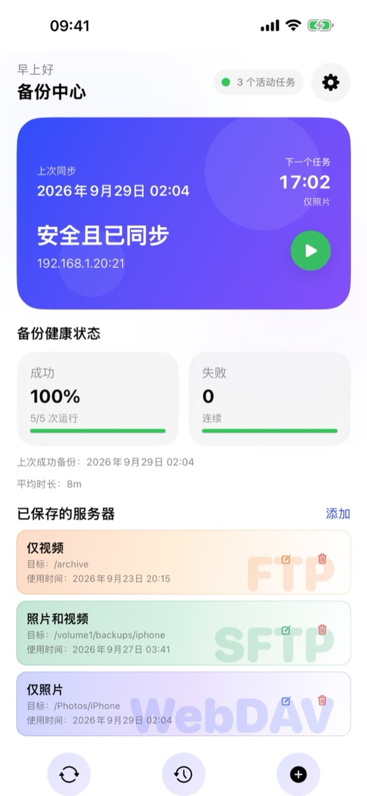
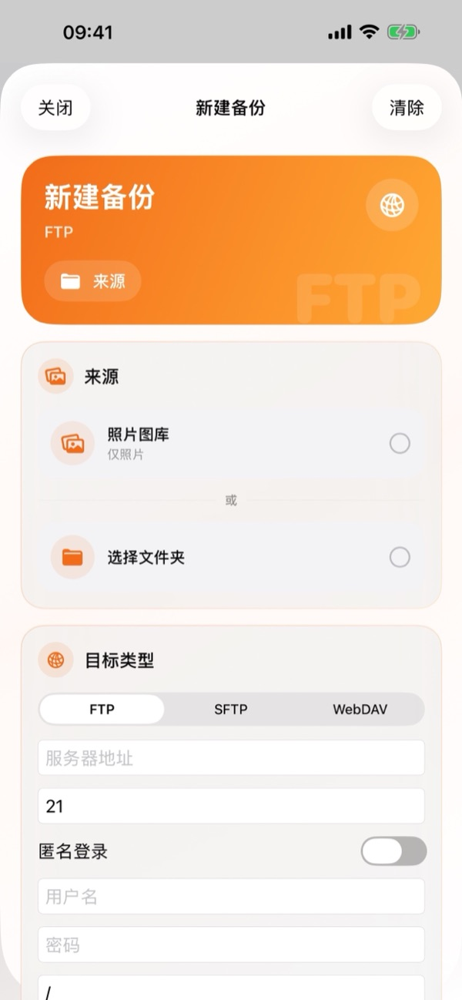
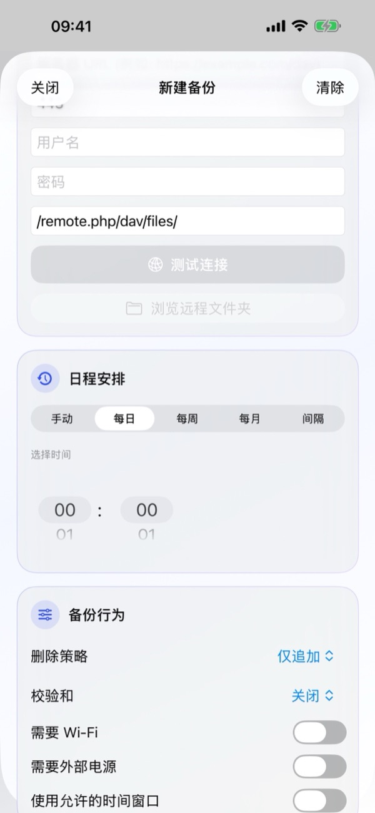
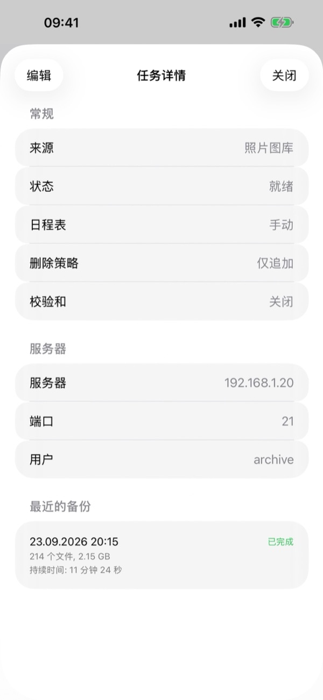
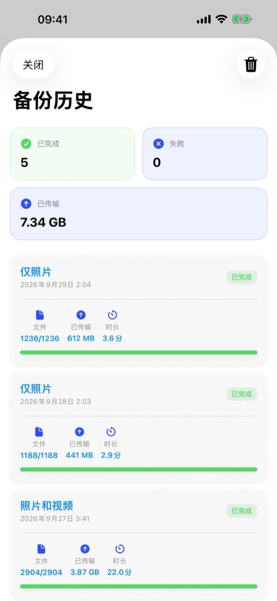
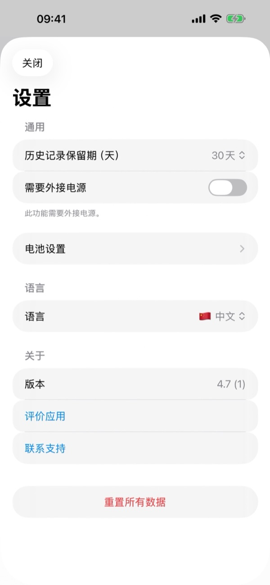

1. 准备工作
- 兼容的服务器：任何支持 FTP、SFTP (SSH) 或 WebDAV (HTTP/HTTPS) 的 NAS（群晖 Synology、威联通 QNAP、TrueNAS、Unraid）、家庭服务器或私有云（Nextcloud、ownCloud、WebDAV 存储）。
- 连接信息：服务器地址（IP、域名或完整 WebDAV URL）、端口（默认：FTP 21、SFTP 22、WebDAV 443/80）以及用户名和密码（FTP 也支持匿名登录）。
- iOS 权限：照片图库的完全访问权限、家庭局域网所需的本地网络权限，以及通知权限。
2. 备份中心概览
打开 BackupFlow 后，备份中心会实时展示您的备份系统状态：
- 状态卡片：显示上次同步时间、下一个任务的时间和名称、当前保护状态（安全且已同步）、服务器地址，以及用于立即启动备份的绿色播放 (▶) 按钮。
- 备份健康度：统计备份成功率（百分比与运行次数）、连续失败次数、上次成功备份时间及平均耗时。
- 已保存的服务器：以彩色卡片展示所有已配置的 FTP、SFTP 和 WebDAV 备份任务，支持快速编辑 (✏️) 或删除 (🗑️)。轻点任意卡片即可打开任务详情。
- 底部导航栏与设置：底部三个按钮分别用于同步/运行 (🔄)、打开备份历史 (🕒) 和创建新建备份 (+)。右上角的齿轮图标 (⚙️) 用于打开设置。

3. 创建新建备份
轻点备份中心底部的 + 按钮（或已保存的服务器旁的添加），打开新建备份界面：
- 来源：选择照片图库（仅照片、仅视频或照片和视频），或轻点选择文件夹从 iOS“文件”App 中选择任意文件夹。
- 目标类型：选择 FTP、SFTP 或 WebDAV。输入服务器地址、端口、用户名、密码以及远程路径（例如
/remote.php/dav/files/）。轻点测试连接验证无误后，可轻点浏览远程文件夹直接选择服务器上的目标文件夹。 - 日程安排：选择手动、每日、每周、每月或间隔，并在选择时间中设定执行时间。
- 备份行为：设置删除策略、校验和及运行条件，然后保存任务。
首次完整备份完成后，BackupFlow 只会传输新增或修改过的文件，因此后续备份速度会快得多。


4. 任务详情与管理
在已保存的服务器下轻点任意任务卡片，即可查看任务详情：
- 通用：查看来源、当前状态（如就绪）、日程安排、删除策略和校验和状态。
- 服务器：查看服务器地址、端口和用户名。
- 最近备份：查看该任务的最近执行记录，包括时间、状态、传输文件数、大小和耗时。
- 轻点左上角的编辑即可随时修改任务配置。

5. 日程安排与运行条件
在日程安排中可选择五种模式：手动、每日、每周、每月或间隔，并在选择时间中指定时间。
在备份行为中可限制自动备份的运行条件：
- 需要 Wi-Fi：绝不使用蜂窝移动数据。
- 需要外部电源：仅在 iPhone 连接充电器时运行。
- 使用允许的时间窗口：仅在指定时间段内（如夜间）执行自动备份。
- 最低电池电量（位于设置 › 电池设置）：电量低于阈值时自动跳过备份。
6. 删除策略、校验和与 iCloud
在备份行为中，您可以控制 iPhone 删除文件后服务器端的处理方式以及文件完整性校验：
- 删除策略 › 仅追加
- 从不删除服务器上的任何文件。如果您打算在备份后删除 iPhone 上的照片以释放空间，强烈建议使用此模式。
- 删除策略 › 镜像
- 使服务器文件夹与 iPhone 来源保持完全一致。在 iPhone 上删除的文件也会在下次同步时从服务器上删除。
- 删除策略 › 归档删除
- 不会永久删除任何内容。在 iPhone 上移除的文件会移至服务器上带日期的 .backupflow_archive 文件夹中。
- 校验和 (Checksum)
- 开启后会在上传完成后校验每个文件的完整性（默认关闭以获得最高传输速度）。
iCloud 照片提示：如果启用了“优化 iPhone 储存空间”，请开启需要时下载 iCloud 项目，以便自动下载并备份仅保存在 iCloud 中的原片。
7. 后台备份
BackupFlow 集成了 iOS BGTaskScheduler 以执行后台自动备份。由于 iOS 会根据电量、充电状态和使用习惯决定后台运行的具体时刻，计划备份可能会在设定时间之后稍晚启动或发送通知提醒。
如果 iOS 中途暂停了后台传输，只需打开 BackupFlow 即可自动续传，已上传的文件会自动跳过。首次进行大容量备份时，建议让 iPhone 保持连接 Wi-Fi 和充电器。
8. 备份历史
轻点备份中心底部栏中间的历史 (🕒) 按钮即可打开备份历史：
- 汇总卡片：顶部显示已完成次数、失败次数以及累计已传输数据量（GB/MB）。
- 详细记录：每条记录展示任务名称、日期时间、状态标签、文件数（如
1236/1236）、已传输大小和耗时。轻点右上角的垃圾桶图标 (🗑️) 可清空历史记录。

9. 应用设置
轻点备份中心右上角的齿轮图标 (⚙️) 打开设置：
- 历史记录保留期（天）：选择历史记录在设备上的保留天数（如 30 天）。
- 需要外部电源与电池设置：全局充电要求与最低电量阈值设置。
- 语言：在应用内随时切换 12 种支持语言。
- 关于：查看当前版本、轻点评价应用或联系支持。
- 重置所有数据：清除此 iPhone 上的所有任务、历史记录和已保存的密码，服务器上的文件不会受到任何影响。

10. 常见问题排查
- 无法连接到服务器。
- 请检查服务器地址、端口（FTP 21、SFTP 22、WebDAV 443/80）、用户名和密码。对于家庭局域网服务器，请确认 iPhone 连接在同一 Wi-Fi 下，且已在 iPhone 设置 › 隐私与安全性 › 本地网络 › BackupFlow 中开启权限。
- 计划的备份未执行。
- 请检查任务的备份行为条件（Wi-Fi、电源、时间窗口、电池设置）以及是否已允许 BackupFlow 发送通知。
- 部分照片未备份。
- 请确认已授予照片“完全访问”权限，并开启需要时下载 iCloud 项目。
- 服务器上的文件被删除了。
- 请将任务的删除策略从镜像改为仅追加或归档删除。
- 出现 SFTP 安全警告。
- 服务器的 SSH 指纹发生了变化。如果服务器重装或更换过属于正常情况，否则请先向管理员确认。
11. 隐私与安全
您的文件直接从 iPhone 传输到您自己的服务器。BackupFlow 没有自己的云服务器，从不查看您的文件，也不收集任何个人数据或分析统计。服务器密码加密保存在 iOS 钥匙串 (Keychain) 中。详情请参阅完整隐私政策。
12. 需要帮助？
请在应用内前往设置 › 联系支持（或发送邮件至 tamersavasci@icloud.com），邮件会自动附上应用版本和设备型号。